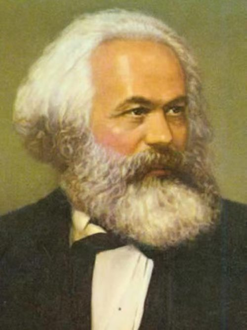
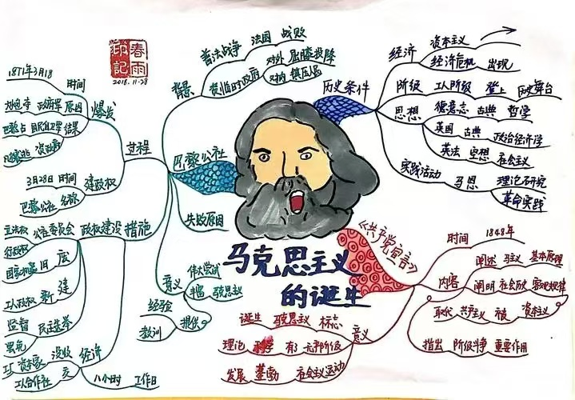
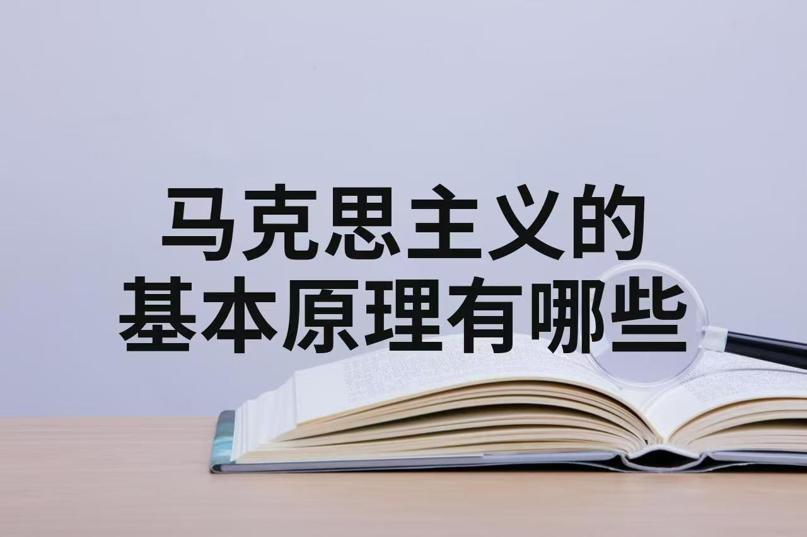
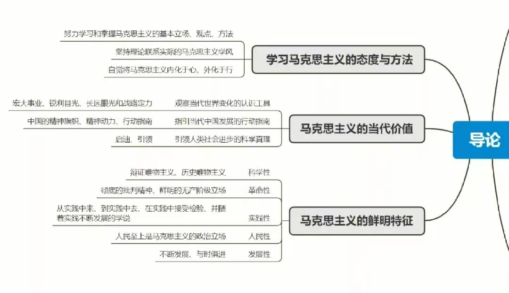

马克思
卡尔·马克思，全名卡尔·海因里希·马克思（德语：Karl Heinrich Marx，1818年5月5日－1883年3月14日），马克思主义的创始人之一，
第一国际的组织者和领导者，马克思主义政党的缔造者之一，全世界无产阶级和劳动人民的革命导师，无产阶级的精神领袖，
国际共产主义运动的开创者。
马克思是德国的思想家、政治学家、哲学家、经济学家、革命理论家、历史学家和社会学家。
主要著作有《资本论》《共产党宣言》等马克思创立的广为人知的哲学思想为历史唯物主义，
其最大的愿望是对于个人的全面而自由的发展。马克思创立了经济理论《资本论》，
马克思确立他的阐述原则是“政治经济学批判”。马克思认为，这是“政治经济学原理”的东西。
马克思认为资产阶级的灭亡和无产阶级的胜利是同样不可避免的。他和恩格斯共同创立的马克思主义学说，
被认为是指引全世界劳动人民为实现社会主义和共产主义理想而进行斗争的理论武器和行动指南。


马克思主义基本原理


马克思主义的基本原理主要包括以下几个方面：
首先，马克思主义认为物质世界是客观存在的，并处于不断运动、变化和发展之中。这一原理强调物质第一性，意识第二性，即意识是物质的反映。
它揭示了世界的客观性和规律性，为我们认识世界和改造世界提供了科学的基础。
其次，马克思主义揭示了人类社会发展的基本规律。它指出，生产力和生产关系的矛盾运动是推动社会发展的根本动力。
在阶级社会中，这种矛盾表现为阶级斗争，而无产阶级则是推动社会变革的主要力量。
这一原理为我们理解社会历史发展提供了科学的指导。
此外，马克思主义还深入剖析了资本主义社会的本质和运作规律。
它揭示了资本主义生产方式所固有的内在矛盾，即生产社会化与生产资料私人占有之间的矛盾。
这一矛盾导致了资本主义社会周期性的经济危机和阶级矛盾的激化。马克思主义主张，只有通过无产阶级的革命行动，推翻资本主义制度，
才能为社会的全面进步和发展开辟道路。
最后，马克思主义还提出了人的自由全面发展的理想追求。
它设想在一个更加公正、平等的社会环境中，人们能够摆脱阶级压迫和剥削，实现真正的自由和平等。
这一原理为我们指明了人类社会的发展方向和目标，强调了人的全面发展和自由的重要性。